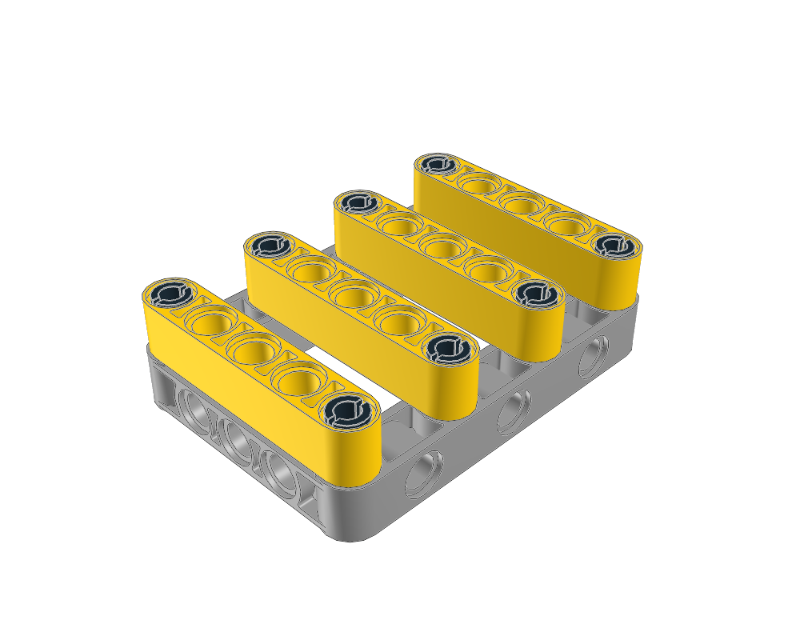
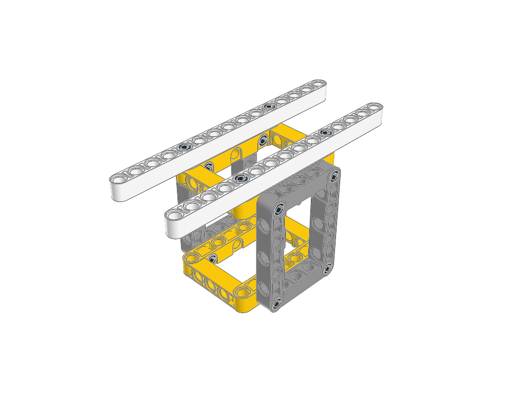
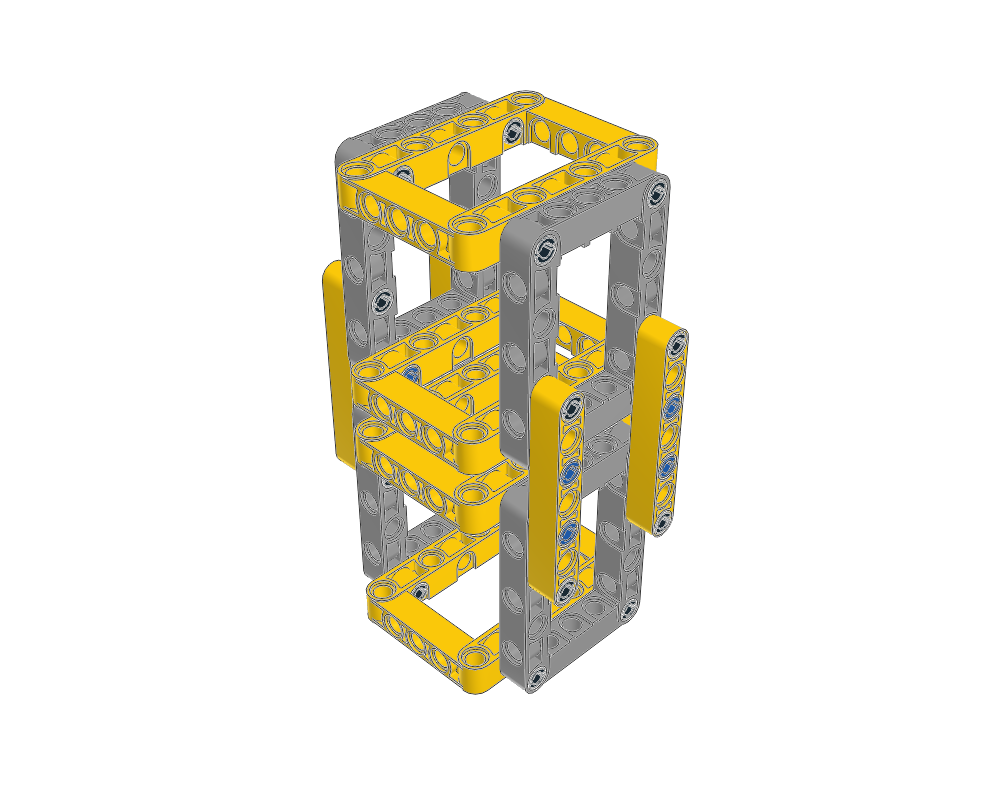
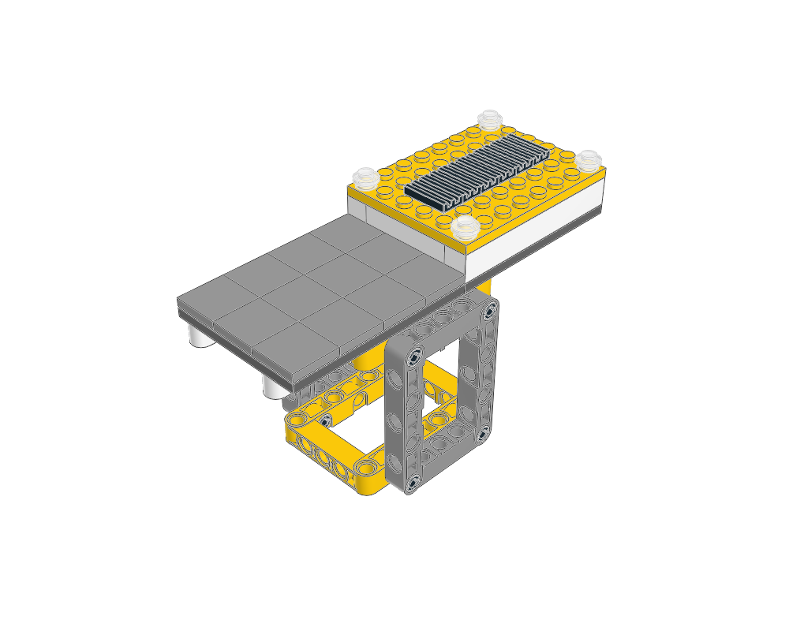
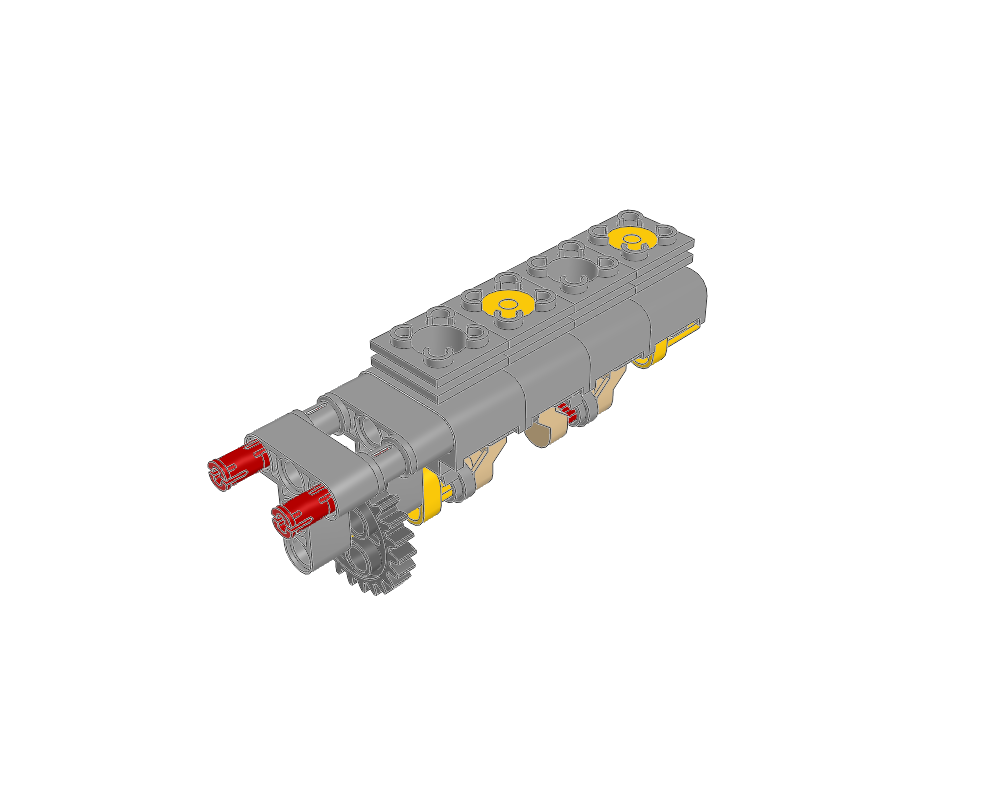
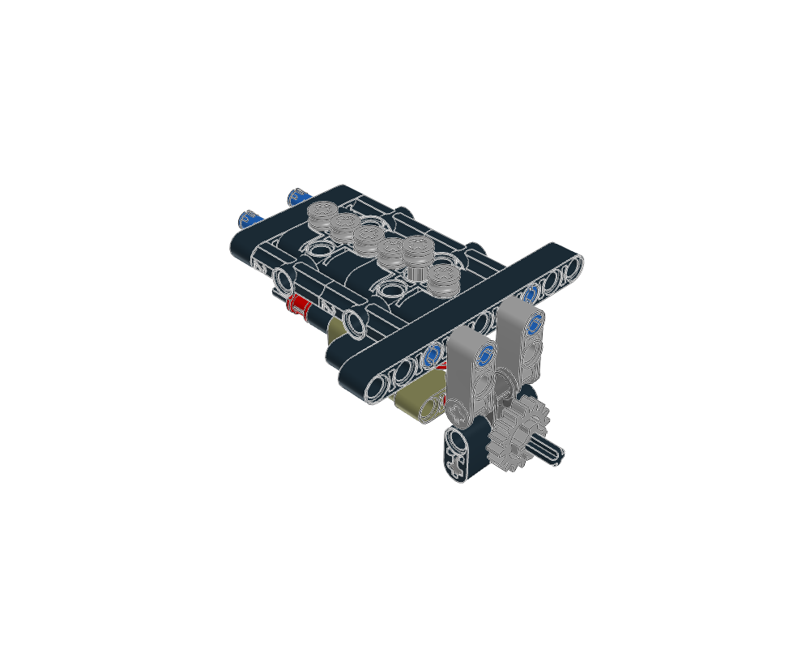
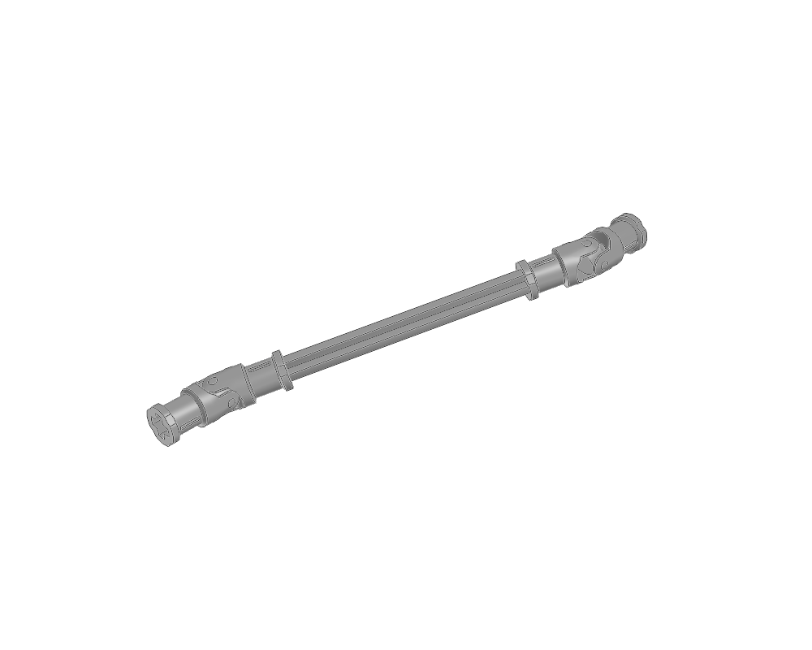
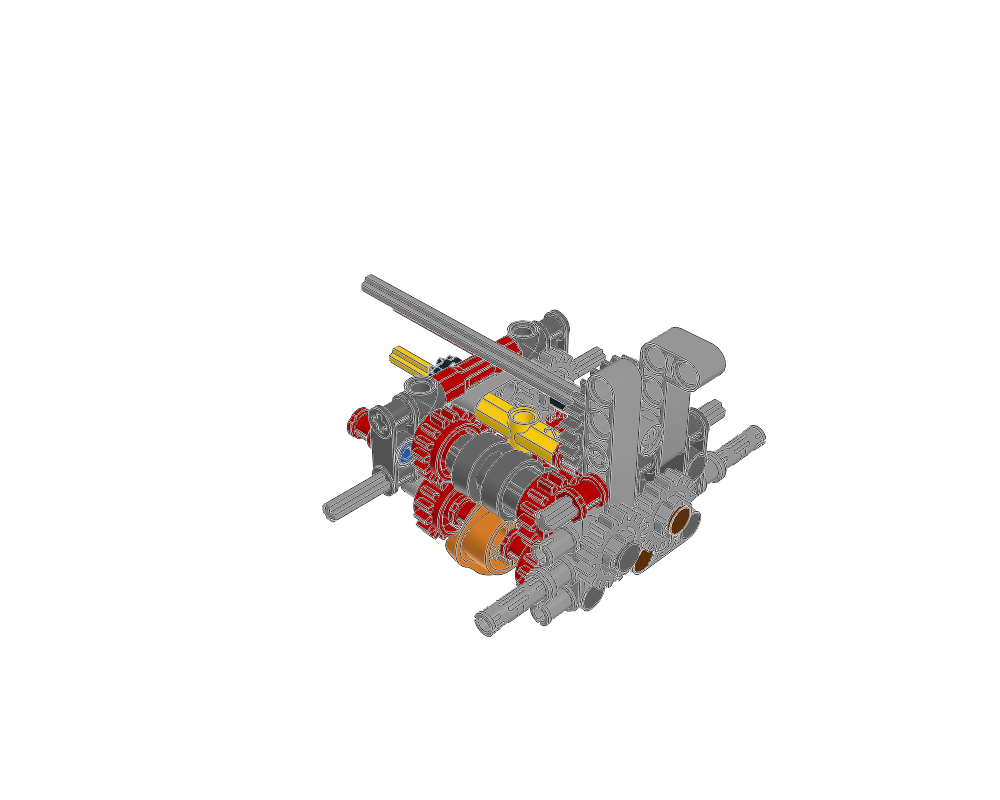
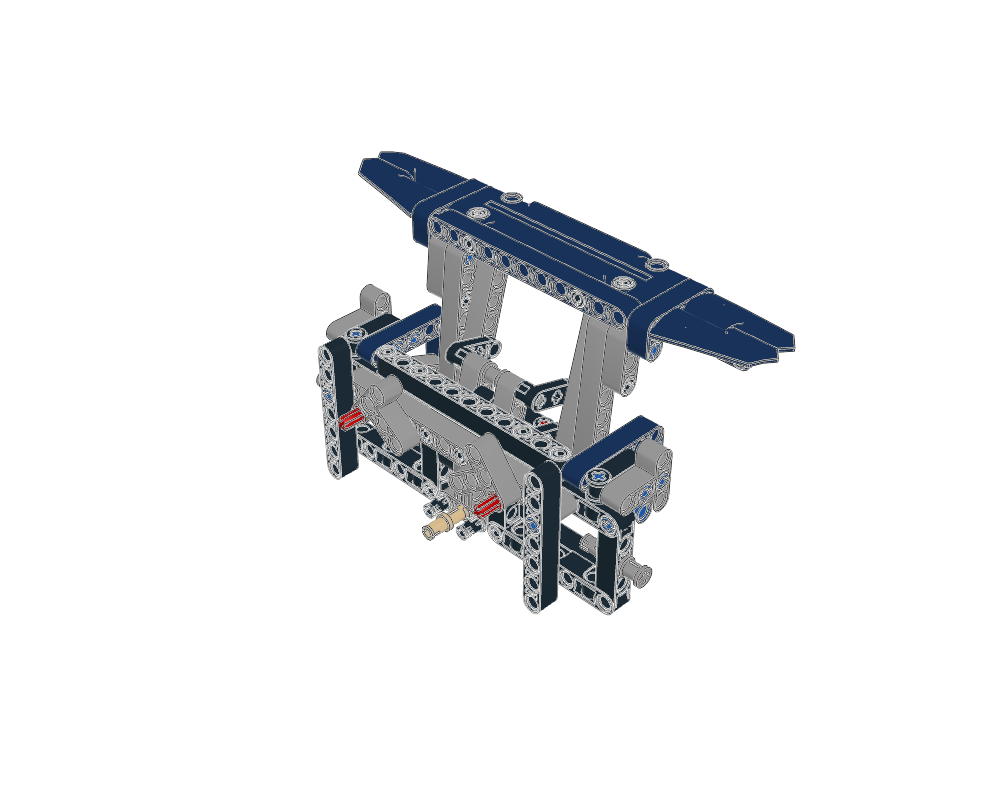
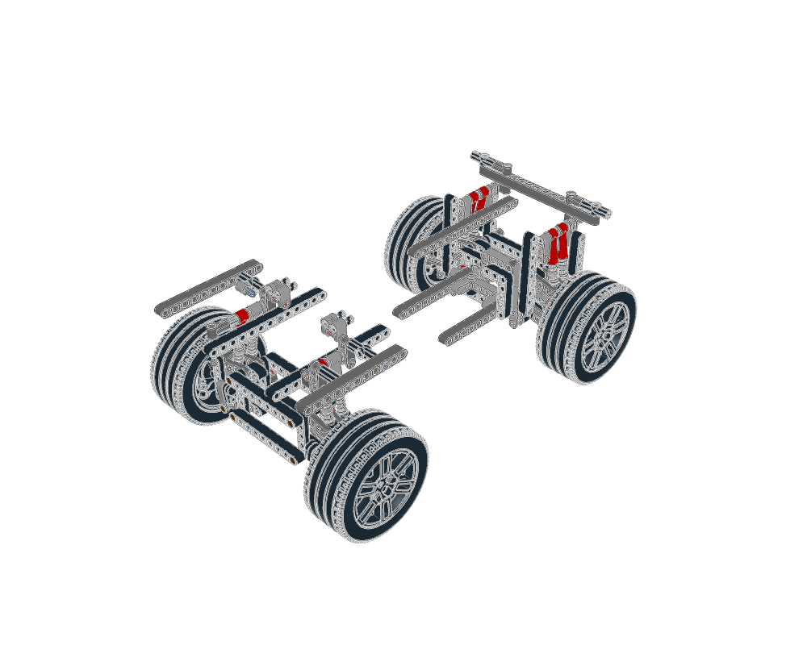

Fixed structure

Reinforced mounting frame
Four crossmembers, each attached at two separated points, reinforce a moulded frame.
13 parts · Construction and adaptation guide
Frames, supports and useful mechanisms to study and adapt. Read each guide's mounting interfaces and parent dependencies before reuse. Mechanism operation is intended; analytical verification is deferred.
Atlas guide · Mechanism sources
Fixed structure

Four crossmembers, each attached at two separated points, reinforce a moulded frame.
13 parts · Construction and adaptation guide
Fixed structure

Perpendicular frames and two long rails establish structure in three dimensions.
18 parts · Construction and adaptation guide
Fixed structure

Repeated box cells joined with overlapping beams and shared three-layer pins.
36 parts · Construction and adaptation guide
Fixed structure

A System equipment body and tiled deck mount on a Technic skeleton through eight stud-ended pins.
55 parts · Construction and adaptation guide
Mechanism study

Repeat a compact piston/rod/crank construction while preserving cylinder guides, phase and the geared input.
34 parts · Construction and adaptation guide
Mechanism study

Combine phased liftarm cams with a separate guided follower block and preserve the source rest offset.
55 parts · Construction and adaptation guide
Mechanism study

Route an offset drive through two yokes-and-crosses joints while retaining the intermediate fork phase.
7 parts · Construction and adaptation guide
Mechanism study

Study constant-mesh gear trains, two alternating driving rings and the separate rotary selector.
66 parts · Construction and adaptation guide
Mechanism study

Use equal cranks and matched pivot spacing to lift a panel while retaining its orientation.
119 parts · Construction and adaptation guide
Mechanism study

Study four wheel corners, parallel wishbones, guide links, matching half-shafts and paired shocks with their mounting frame.
259 parts · Construction and adaptation guide